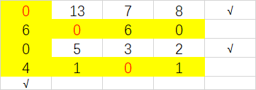
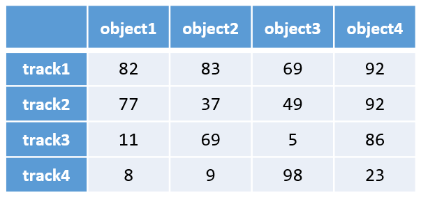
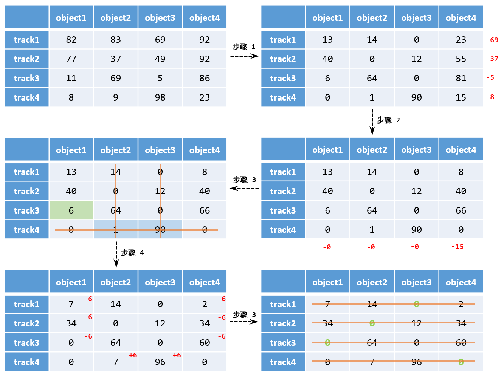

前言
主要为了填坑,匈牙利算法感觉挺重要的,目前已知的就有tracking, DETR等算法都用到了,前面几篇说到了deepsort和ByteTrack等追踪算法,都用到了匈牙利匹配,这里记录一下 PS:有两个图挂了，后续更新一下
简介
匈牙利算法能精确求解指派问题，获取最优分配方案。匈牙利算法求解指派问题基于以下原理：在一个成本矩阵中，对某一行或者某一列加上或减去一个数，最优的分配方案不变。基于此原理，我们可以对成本矩阵进行变换，直到使用试指派能够找到最优解（对一个n*n的成本矩阵而言，找到n个独立0元素）
问题定义
假设有4个任务,要分配给4个工人,工人i完成j任务需要的代价矩阵如下所示:
| 甲 |
2 |
15 |
13 |
4 |
| 乙 |
10 |
4 |
14 |
15 |
| 丙 |
9 |
14 |
16 |
13 |
| 丁 |
7 |
8 |
11 |
9 |
算法流程步骤
网上搜了一下大概有两种做法
方法一
行列约束
先对矩阵进行行约束,每行减去行最小值,保证每行都有0
| 甲 |
0 |
13 |
11 |
2 |
| 乙 |
6 |
0 |
10 |
11 |
| 丙 |
0 |
5 |
7 |
4 |
| 丁 |
0 |
1 |
4 |
2 |
再对矩阵进行列约束,每列减去行最小值,保证每列都有0
| 甲 |
0 |
13 |
7 |
0 |
| 乙 |
6 |
0 |
6 |
9 |
| 丙 |
0 |
5 |
3 |
2 |
| 丁 |
0 |
1 |
0 |
0 |
试指派
检验是否能找到n个独立0元素，否则需要对矩阵进行进一步变换以增加矩阵中的0元素个数。试指派从0元素最少的行或列开始，当确定了cij=0为所选元素，划去第i行和第j列，即不在考虑该区域内的元素。从0元素最少的行开始指派，因此指派的顺序是(行)：2->3->1->4，通过试指派找到了最优分配，即员工1执行任务4、员工2执行任务2、员工3执行任务1、员工4执行任务3。
修正
并不是所有的情况都能通过试指派找到最优分配方案（找到n个独立0元素）,此时需要对矩阵进行变换，目的是增加0矩阵中0元素。假设最后得到的矩阵如下所示：
| 甲 |
0 |
13 |
7 |
8 |
| 乙 |
6 |
0 |
6 |
0 |
| 丙 |
0 |
5 |
3 |
2 |
| 丁 |
4 |
1 |
0 |
1 |
打钩
(1)对没有独立0元素的行打勾 (2)对打勾行含0元素的列打勾 (3)对打勾列含独立0元素的行打勾 (4)重复（2）（3）直到没有新的勾出现
| 甲 |
0 |
13 |
7 |
8 |
🐶3 |
| 乙 |
6 |
0 |
6 |
0 |
|
| 丙 |
0 |
5 |
3 |
2 |
🐶1 |
| 丁 |
4 |
1 |
0 |
1 |
|
|
🐶2 |
|
|
|
|
画线
对没有打勾的行和打勾的列进行画线操作 
矩阵变换
（1）找到未被线覆盖的最小元素(此时是2)
（2）没有画线的行减去该元素
| 甲 |
0 |
11 |
5 |
6 |
| 乙 |
6 |
0 |
6 |
0 |
| 丙 |
0 |
3 |
1 |
0 |
| 丁 |
4 |
1 |
0 |
1 |
（3）画线的列加上该元素
| 甲 |
0 |
11 |
5 |
6 |
| 乙 |
8 |
0 |
6 |
0 |
| 丙 |
0 |
3 |
1 |
0 |
| 丁 |
6 |
1 |
0 |
1 |
输出
所以此时按0元素最少行开始,是1,4行先分配,那就给甲A,丁C,然后再是乙丙,分别是BD
代码
1
2
3
4
5
6
7
8
9
10
11
12
13
14
15
16
17
18
19
20
21
22
23
24
25
26
27
28
29
30
31
32
33
34
35
36
37
38
39
40
41
42
43
44
45
46
47
48
49
50
51
52
53
54
55
56
57
58
59
60
61
62
63
64
65
66
67
68
69
70
71
72
73
74
75
76
77
78
79
80
81
82
83
84
85
86
87
88
89
90
91
92
93
94
95
96
97
98
99
100
101
102
103
104
105
106
107
108
109
110
111
112
113
114
115
116
117
118
119
120
121
122
123
124
125
126
127
128
129
130
131
132
133
134
135
136
137
138
139
140
141
142
143
144
145
146
147
148
149
150
151
152
153
154
155
156
157
158
159
160
161
162
163
164
165
166
167
168
169
170
171
172
173
174
175
176
177
178
179
180
181
182
183
184
185
186
187
188
189
190
191
| #include<iostream>
#include<algorithm>
#include<fstream>
using namespace std;
int n;
int *assign;
int **mat;
int **matRcd;
int totalCost;
bool read(const char* ad)
{
ifstream iff;
iff.open(ad);
if(!iff)return false;
iff>>n;
assign=new int[n];for(int i=0;i<n;i++)assign[i]=-1;
mat=new int*[n];for(int i=0;i<n;i++)mat[i]=new int[n];
matRcd=new int*[n];for(int i=0;i<n;i++)matRcd[i]=new int[n];
for(int i=0;i<n;i++){
for(int j=0;j<n;j++){
iff>>mat[i][j];
matRcd[i][j]=mat[i][j];
}
}
iff.close();
totalCost=0;
return true;
}
void rowSub()
{
int *minEmt=new int[n];for(int i=0;i<n;i++)minEmt[i]=(int)1e8;
for(int i=0;i<n;i++)for(int j=0;j<n;j++)if(mat[i][j]<minEmt[i])minEmt[i]=mat[i][j];
for(int i=0;i<n;i++)for(int j=0;j<n;j++)mat[i][j]-=minEmt[i];
delete []minEmt;
}
void columnSub()
{
int *minEmt=new int[n];for(int j=0;j<n;j++)minEmt[j]=(int)1e8;
for(int j=0;j<n;j++)for(int i=0;i<n;i++)if(mat[i][j]<minEmt[j])minEmt[j]=mat[i][j];
for(int j=0;j<n;j++)for(int i=0;i<n;i++)mat[i][j]-=minEmt[j];
delete []minEmt;
}
bool isOptimal(int *assign)
{
int *tAssign=new int[n];for(int i=0;i<n;i++)tAssign[i]=-1;
int *nZero=new int[n];
bool *rowIsUsed=new bool[n];
bool *columnIsUsed=new bool[n];
for(int i=0;i<n;i++)rowIsUsed[i]=columnIsUsed[i]=0;
int nLine=0;
while(nLine<n){
for(int i=0;i<n;i++)nZero[i]=0;
for(int i=0;i<n;i++){
if(rowIsUsed[i]==1)continue;
for(int j=0;j<n;j++){
if(columnIsUsed[j]!=1&&mat[i][j]==0)nZero[i]++;
}
}
int minZeros=n;
int rowId=-1;
for(int i=0;i<n;i++){
if(rowIsUsed[i]==0&&nZero[i]<minZeros&&nZero[i]>0){
minZeros=nZero[i];
rowId=i;
}
}
if(rowId==-1)break;
for(int j=0;j<n;j++){
if(mat[rowId][j]==0&&columnIsUsed[j]==0){
rowIsUsed[rowId]=1;
columnIsUsed[j]=1;
tAssign[rowId]=j;
break;
}
}
nLine++;
}
for(int i=0;i<n;i++)assign[i]=tAssign[i];
delete []tAssign;
delete []nZero;
delete []rowIsUsed;
delete []columnIsUsed;
for(int i=0;i<n;i++)if(assign[i]==-1)return false;
return true;
}
void matTrans()
{
bool *rowTip=new bool[n];
bool *columnTip=new bool[n];
bool *rowLine=new bool[n];
bool *columnLine=new bool[n];
for(int i=0;i<n;i++)rowTip[i]=columnTip[i]=rowLine[i]=columnLine[i]=0;
for(int i=0;i<n;i++)if(assign[i]==-1)rowTip[i]=1;
while(1){
int preTip=0;
for(int i=0;i<n;i++)preTip=preTip+rowTip[i]+columnTip[i];
for(int i=0;i<n;i++){
if(rowTip[i]==1){
for(int j=0;j<n;j++){
if(mat[i][j]==0)columnTip[j]=1;
}
}
}
for(int j=0;j<n;j++){
if(columnTip[j]==1){
for(int i=0;i<n;i++){
if(assign[i]==j)rowTip[i]=1;
}
}
}
int curTip=0;
for(int i=0;i<n;i++)curTip=curTip+rowTip[i]+columnTip[i];
if(preTip==curTip)break;
}
for(int i=0;i<n;i++){
if(rowTip[i]==0)rowLine[i]=1;
if(columnTip[i]==1)columnLine[i]=1;
}
int minElmt=(int)1e8;
for(int i=0;i<n;i++)for(int j=0;j<n;j++)if(rowLine[i]==0&&columnLine[j]==0&&mat[i][j]<minElmt)minElmt=mat[i][j];
for(int i=0;i<n;i++)if(rowTip[i]==1)for(int j=0;j<n;j++)mat[i][j]-=minElmt;
for(int j=0;j<n;j++)if(columnTip[j]==1)for(int i=0;i<n;i++)mat[i][j]+=minElmt;
delete []rowTip;
delete []columnTip;
delete []rowLine;
delete []columnLine;
}
void hungary()
{
read("cost.dat");
rowSub();
columnSub();
while(!isOptimal(assign)){
matTrans();
}
for(int i=0;i<n;i++)totalCost+=matRcd[i][assign[i]];
for(int i=0;i<n;i++)delete []mat[i];delete []mat;
for(int i=0;i<n;i++)delete []matRcd[i];delete []matRcd;
}
int main()
{
hungary();
cout<<"总成本为"<<totalCost<<endl;
for(int i=0;i<n;i++)cout<<"员工"<<i+1<<"-->"<<"任务"<<assign[i]+1<<endl;
cin.get();
}
|
方法二
换一个代价矩阵:
cost_matrix
1 如图所示,一样的先进行行最小值和列最小值的减法
2 然后先看看最少能能用x条线覆盖所有的0,若x<工人的数量,则到3,否则到4
3 找到线外的最小值,每个没被线覆盖的行减去这个数,被线覆盖的列加上这个数,转到2
4 输出
compute